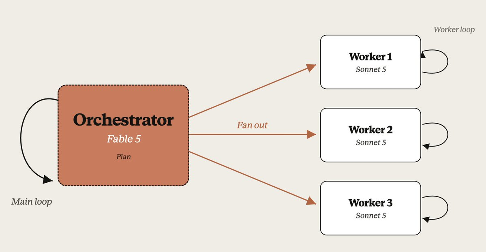
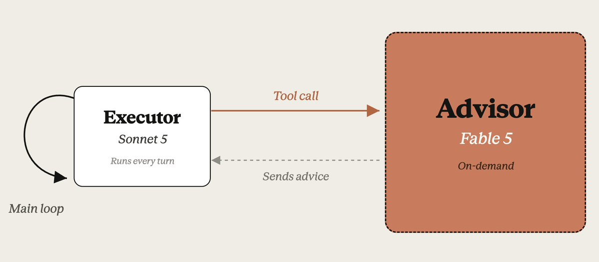

模型分工：不必每件事都用最強模型
額度用完之後，除了換模型，還能重新安排工作。
你很習慣把工作交給 Fable。某天它不能用了，其他模型還能用。
你會直接換一顆繼續，還是調整誰負責哪一段？
三種做法，前兩種並列
orchestrator 與 advisor 是並列選項，不是新舊替代。「最常用」是我的使用經驗，不是統計。全場用靜態歷史案例與設定示例，不現場操作，也不承諾省幾成。
把工作交出去，還是把判斷借進來
差別在交出去的是什麼。派工交出的是一件有範圍、有驗收條件的工作，review 或檢查也算一件工作；顧問借的是對 main 自己某個判斷的第二意見，沒有交付物，只有意見。責任都還在你。
| 做法 | 主流程保留什麼 | 交出去什麼 | 這場的案例 |
|---|---|---|---|
| orchestrator | 任務脈絡、分派、整合與驗收責任 | 一段可界定的實作、review 或檢查 | 資料遷移的 subagent-driven 實作階段 |
| advisor | 原本工作的執行與後續決策 | 某一次判斷或另一個視角 | 顧問指出提問方式的盲點 |


兩張圖出自 Anthropic 官方說明（ClaudeDevs thread），圖中的 Fable 5 與 Sonnet 5 是官方示例配置，不是規則——哪個角色配哪個型號由你決定。
派工時到底在選什麼
不是按難度派，是按這件事需要什麼能力派。難度是結果，不是分類軸。
照已定義的目標，讀既有程式、修改與驗證。
比較方案、review、核對證據與取捨。
輸入與規則已完整，執行固定的轉換或整理。
「看起來簡單」不代表不用判斷。摘要若要篩選、查證、處理矛盾，就不是格式轉換。
派工還有一個與模型無關的理由
context 不是免費的倉庫，是模型的注意力預算。放太多東西進去，先壞的是判斷，再壞的是記憶，最後才是錢。
第一層，模型表現。context 越長，模型從裡面準確撈出資訊的能力越弱。這不是快滿了才變差，而是一路下滑，簡單任務也會。Anthropic 的工程文章把這叫 context rot：注意力要處理 n 個 token 之間 n² 組關係，預算有限。Chroma 測了 18 個模型，結論是「模型並不均勻地使用 context，輸入越長表現越不可靠」。幾千行測試輸出留在 main，就是拿雜訊稀釋後面每一個判斷。
第二層，壓縮失真。context 逼近上限時 Claude Code 會自動壓縮，把前面的對話摘要成一段。留什麼丟什麼由模型猜。官方文件寫得直接：過度壓縮會丟掉「當時看起來不重要、後來才發現關鍵」的細節。你前面拍板的決策、看過的行號，可能就在這一步變模糊，之後的推理建在殘缺的記憶上。
第三層才是錢。Claude Code 每一輪都重送整段對話，context 越胖，之後每一輪都跟著胖。第 6 章費用表裡那幾百萬個 cache read 就是這樣長出來的。
所以 subagent 在自己的 context window 裡工作這件事很重要。它讀過的檔案、測試輸出、搜尋結果都留在那裡，只有結果回到 main。要翻很多東西的工作，就算用同一顆模型，派出去也能讓 main 的對話保持乾淨。保護的是 main 的判斷品質，其次才是省錢。
分派實作範圍
收回結果
跑整合檢查
讀既有程式
搜尋所有引用
跑一輪測試
比對契約文件
試錯、改、再跑
整理回報
定義角色，再告訴主模型何時找它
不講 hook、不講攔截。一份 agent 定義加一段規則，就是我實作的全部骨架。
--- name: implementer description: 實作已定義的功能，遵循既有程式慣例並回報驗證結果。 model: opus effort: medium ---
目標已定義的實作交給 implementer；需要比較與驗證的工作交給判斷角色。交付時帶上範圍、材料與驗收要求，回來後由主流程核對結果。
我的派工規則，白話示意版重點是讓主模型知道何時找誰，而不只是資料夾裡多了一份定義。
Fable 帶 subagent 完成一段資料遷移實作
既有系統要換一種資料儲存與讀取方式。這段工作包含雙寫、讀取端切換，以及契約文件與檢查。
- Fable main
接到已拆好的功能票，依範圍分派實作。
- Opus workers
分別完成雙寫、讀取端切換與文件工作。
- Fable main
收回結果並跑整合檢查。
- Opus reviewer → Fable main
reviewer 找到實作缺陷；Fable 根據 review 修正，再跑測試。
1 failed / 92 passed→93 passed - Sonnet checker
檢查 PR 提案；不通過就修內容，再檢查到通過。這一步也有重試。
主模型沒有消失，也不是完全不動手。它仍要整合、判斷與修正；subagent 承接的是有邊界的工作，而不是替 main 扛走全部責任。
誰產生最多 output？單價較高的 output，也佔最多花費嗎？
| 模型 | 一般 input | output | 快取讀取 | 快取寫入 | 累計 |
|---|---|---|---|---|---|
| Fable 5 | |||||
| Opus 5 | |||||
| Sonnet 5 | |||||
| 合計 |
input 是送給模型處理的內容，output 是模型產生的內容。快取寫入是儲存輸入供後續重用，不是模型寫程式。範圍只含上一章的實作、review、修正與提案檢查。
- 單價5×
output 單價確實較高。三個模型都是一般 input 的 5 倍：50÷10、25÷5、10÷2，美元／百萬 token。
- 數量65.9%
Opus 產生最多 output：222,751 ÷ 338,230。該組含實作與 code review，不是純寫程式的佔比。
- 總花費73.9%
但花費最多的是快取讀取。output 只佔 13.0%。重用輸入的累計量，超過了 output 較高單價帶來的花費。
寫出來的每個 token 比較貴，但整段工作不只是在寫。這個案例裡，Opus 產生最多輸出，最大的花費卻是讀取快取脈絡。要看單價，也要看實際處理了多少。
型號之外，還有推理投入
回頭看第 5 章那行 effort: medium。同一顆 Opus，實作跟深度判斷我給不同的投入。
哪個模型承接工作。
同一模型投入多少推理與回應工作。
不必把 Opus 的所有任務固定在最高 effort。
官方 Opus 5 指引：自己的評估顯示品質維持時用 low／medium，困難任務可提高。
effort 不是硬 token 上限，也不是可靠的字數控制。
effort 不是 Opus 獨有。著重 Opus 是因為它在我的分工裡承接實作與判斷。
實作與深度判斷可以使用同一模型、不同 effort。這不是說寫程式一定比較簡單，而是兩種工作需要的投入方式不同。
同一套分工也能固化成 workflow
如果流程會重複跑，可以固化成 workflow，指定每個階段的模型。臨時產生的 dynamic workflow 同樣要留意實際派了誰，別不知不覺多出一支 Fable 艦隊。
不說 dynamic 必然昂貴，也不說固化就自動省額度。workflow 是進階題，今天只提這一句。
以上都是把工作派出去。
接下來換另一種做法：只借一次判斷。
我只需要你幫忙想這一題，不是接管整場工作
有時我只是對這一次思考不滿意，但整個 session 換成強模型，後續工作也一起換了。能不能只把這次判斷交出去？
說清楚要判斷的問題，不是請顧問泛泛看一遍。
依問題選顧問，確認它能看到哪些資料。
決定提供什麼脈絡：挑現有答案的錯，或讓它不受答案影響地獨立想一遍。
收回意見，逐條採納、拒絕或標尚待查證。不是拿到建議就自動照做。
原本的執行流程繼續，不讓顧問不知不覺接管實作。
真實案例：給完整思路，反而困住顧問
設計自己的 advisor 用法時，我在兩個選項裡挑：給顧問摘要，或給完整對話。Web Pro 的回覆：
不是讀原 agent 的摘要，就是讀原 agent 的全部思考。你們沒有留下第三種模式：只給原始任務、可驗證證據、限制條件與產出，刻意拿掉原 agent 的結論與辯護。
Web Pro，一次歷史諮詢我原本在兩個選項裡挑，顧問指出我根本沒看到第三個。結果是加入盲審方式，顧問意見逐條裁決納入流程。
不用先複製我的整套環境
三個問題，明天回去就能問自己。依現況誠實選：1 是還沒這樣想過，5 是已成為習慣。這只量你對三種做法的熟悉度，不量它們適不適合你手上的工作。
一段有明確邊界的工作，是否適合交給 subagent，而不是 main 從頭做到底？
使用 Opus 時，是否有意識地選 effort，而非每種任務都用同一檔？
某次判斷卡住時，是否需要借一次顧問意見，而不是讓它接管整場？
三題都選完後，這裡會標出你最不熟的一項，當作起點的建議。
不是少用強模型，而是知道哪一段值得用它。
派出去之後，仍然要接得回來。